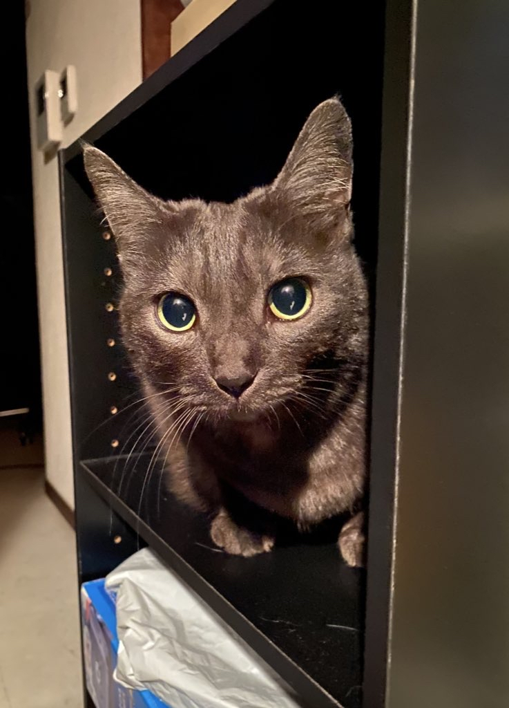
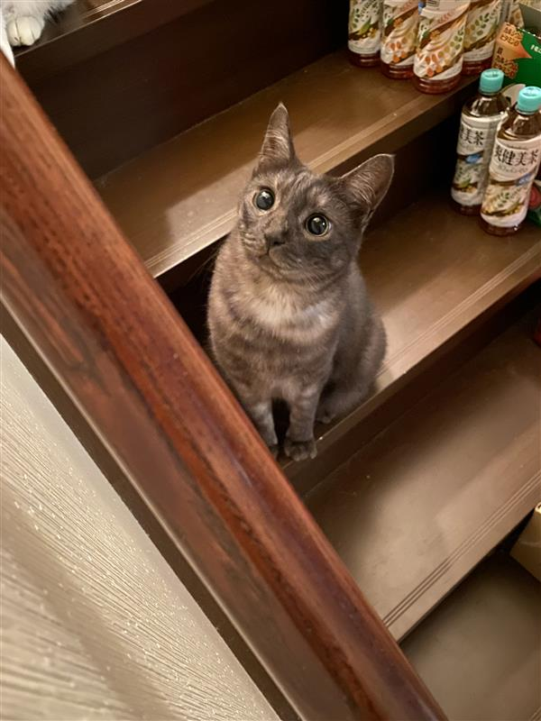

猫の写真ギャラリー
可愛い愛しの飼い猫たちの写真をご紹介します！癒しの時間をお楽しみください。
幸




福


KAN


🐾 猫の豆知識
睡眠時間
猫は1日に12～16時間も眠ります！これは狩りのエネルギーを温存するためだそうです！
聴覚
猫の聴覚は人間の約10倍も優れており、高い音を特によく聞くことができます！
肉球
猫の肉球は可愛いだけでなく温度を感じるセンサーの役割もあり、獲物や危険を察知します！
表情
猫は30種類以上の鳴き声を使い分けて、人間とコミュニケーションを取ります！